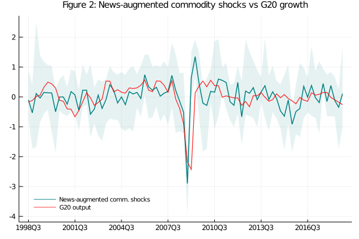

Global shocks and commodities movements are related but are not the same
The current literature recognizes the relevance of commodities prices movements for the macro performance in small open economies. Indeed, terms of trade (approximated by the ratio of export price to import price) have been considered one of the main drivers in the past decade growth for countries like Chile, and Peru, both mining exporters, due by the outstanding Chinese's developing process.
Here talk about some commodity price literature.
However, this prior has been questioned by some authors. In example, Schmitt - Grohe and Uribe (2017, henceforth SGU) using annual information for 38 emerging countries found that commodities shocks are responsible for only 10 percent of domestic variables fluctuations, and when the real exchange rate channel is turning off, the impact is reduced to 2 percent. Nevertheless, these results have some flags. As first place, terms of trade was the unique variable in the external bloc, implying an implicit assumption that commodity prices are sufficient statistics for the world economy. It generates two caveats: (i) the volatility of external real variables and financial ones are not tracing directly hiding many transmission channels, and (ii) prices could summarize the economic information if there are not market frictions, even if we can argue that commodities are traded in markets close to this assumption, the existence of financial instruments related with them gives a play-role to information asymmetries. Therefore, this assumption is not as harmless as we could think.
In a certain way, Zeev,Pappa, and Vicondoa (2017) partially address these caveats. In their research, they use data for 5 LATAM countries and identify a news-augmented terms of trade shock via medium run identification (Uhlig, 2003) estimating a contribution of commodities to domestic variables volatility around 49 percent. Their understanding regards why SGU obtained a small explanation power is that commodities have also a financial role and their pricing takes into account future information, then a simple short run identification neglects in measuring their total impact. Although, they have a valid point, their identification strategy faces some issues.

First, we could concern about the information set that this shock spans, then if the identification is a right one. To explain it, lets imagine two scenarios: (i) this shock is effectively related only to commodities prices fluctuations, or (ii) the innovations are spanning the all the relevant information in the global economy. In the first case, there is not any identification problem, but in the second one, at minimum, there is a labeling issue. For example if (ii) is satisfied the shock is not only a commodity shock but also could be named as a global underlying factor. Thus, commodities prices should be a sufficient statistics for the external implicit economy which could be test. In the contrary state, there will a mixing in channels and mechanism since the identified impulse vector is considered different structural sources. Then, if it would be possible to have a refinement in the identification of this global shock, the results should not show significant differences with the original and it also should be the main determinant for commodity prices variability.
Lets take figure 1, which plots he evolution of the index of commodity prices calculated by the IMF ( put the link) the growth rate of the index for the GDP G20 (right axis), and the BAA spread, to exemplify this point, with an approximated correlation of 59 percent between the output and commodities prices (-36 percent with the BAA spread, and -19 percent between commodities and financial conditions) it looks like that they have a common component (it is in favor to ZPV).

However, if ZPV just isolates innovations in commodities movements the fall in 2008 due by the financial crisis should not be part of the news-augmented shocks (it was originated outside the commodity market and its information should be incorporated through predicted falls in commodity prices), but after recover this kind of shocks using the same procedure than ZPV, we realized that the identified "news-augmented" shocks (see figure 2) are accounting the Great Recession as a innovation of their type, denoting a problem in the "labeling". In fact, the news-augmented shocks reports a correlation around 40 percent with G20 gdp annual growth However, is it just a naming issue?
This paper will address these concerns in a simple way. As first element of my strategy I will propose a new way to identify Global Shocks which takes into consideration the whole foreign block information as anchor for identification, then I will inspect its prediction power on commodities fluctuations comparing it with the results from an standard news identification model. In section II, I explain what I have called as global-shocks identification, while in next section, I present these results as well its impact in Small Open Economies fluctuations, at this point I need to emphasize that at difference with SGu and ZPV, I use 10 countries divided in two groups: one for emerging countries and another for developed ones, since I want to show the asymmetric effect between these classes. The second step, involves identify a second identification vector related only with commodities prices (being orthogonal respect the first one) and verify which one is the main driver for commodities, It is presented in section IV and V. The rest of section discuss my findings, concludes and show some robustness exercises.
Global shocks and commodities movements are related but are not the same
If you have any doubt, suggestions, or simply want to talk, you can contact with me.